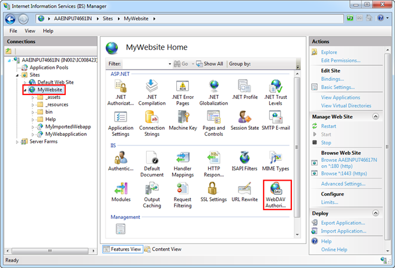
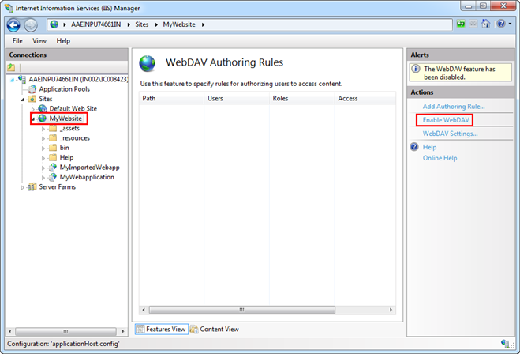

Enable the WebDAV Authoring Rules for a Website
- You are on the target machine and the Internet Information Services (IIS) Manager is open.
- Select Sites > [website] for which you want to enable the WebDAV Authoring Rules and double-click WebDAV Authoring Rules.

- Click Enable Web DAV from the Actions pane.

- Set the Web DAV Settings from the Actions pane and set the Properties behavior to True.